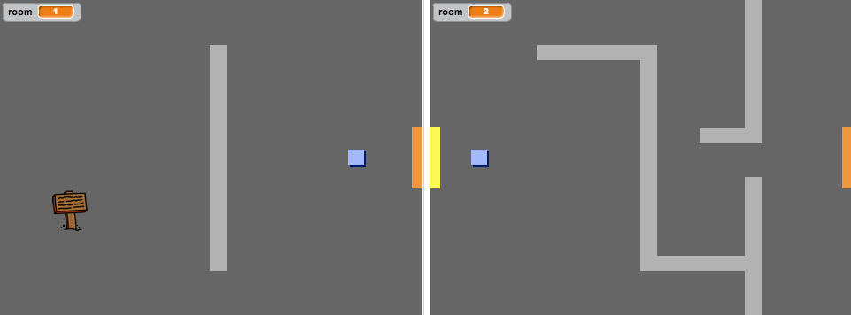
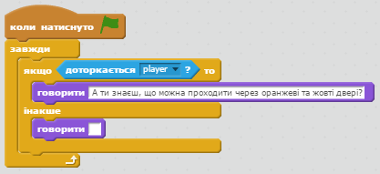
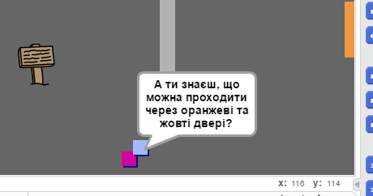
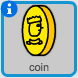
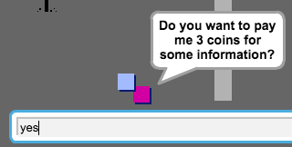
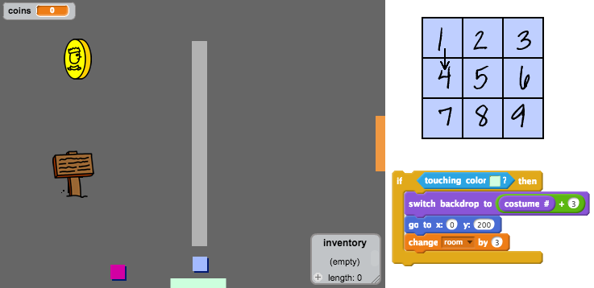

В цьому проекті Ви дізнаєтесь, як створити свою власну пригодницьку гру жанру "відкритий світ".
Крок 1: Кодування персонажа
Розпочнемо зі створення персонажа, який може переміщуватися вашим світом.
Завдання для виконання
Завантажте заготовку для гри за посиланням jumpto.cc/world-get, та відкрийте її в своєму Скретч.
screenshot
Окремо кожен малюнок можна знайти за посиланням Матеріали гри
Ми будемо використовувати клавіші зі стрілками для переміщення персонажа. Коли ти натискаєш стрілку вгору, персонаж повинен рухатись вгору, змінюючи свою у-координату. Додай цей код до спрайту "player":
screenshot
Перевір свого персонажа, натиснувши зелений прапорець, а потім утримуючи стрілку вгору. Чи рухається персонаж вгору?
screenshot
Щоб перемістити персонажа вліво, тобі потрібно додати ще один блок до персонажа "якщо", який змінює координату х:
screenshot
Виклик: Переміщення у всі чотири сторони
Докодуй свого персонажа, так щоб він зміг рухатися вгору, вниз, вліво і вправо. Використовуй код, який вже маєш, щоб створити інший!
Збережіть свій проект
Перевір свого персонажа знову, і ти побачиш, що він має здатність проходити крізь світло-сірі стіни.
screenshot
Щоб виправити це, тобі потрібно перемістити персонажа, але потім помістити його назад, якщо він торкатиметься світло-сірої стіни. Ось код, який тобі знадобиться:
screenshot
Перевір цей новий код, рухаючись до стіни - якщо все правильно, ти не зможеш ходити крізь стіни.
screenshot
Закінчи скрипт, так щоб персонаж не міг зайти в стіну з будь-якої сторони.
Збережіть свій проект
Крок 2: Кодування твого світу
Тепер навчимо персонажа проходити через двері до інших кімнат!
Завдання для виконання
Ваш проект містить додаткові фони для інших кімнат:
screenshot
Тобі знадобиться нова змінна "кімната" (для усіх спрайтів), щоб відмічати, в якій кімнаті знаходиться персонаж.
screenshot
Коли персонаж торкається оранжевих дверей в першій кімнаті, повинен з'явитися інший фон, а персонаж повинен переміститися до лівого боку сцени. Ось код, який тобі знадобиться, - його потрібно додати до системи ходіння персонажа в блок "якщо":
screenshot
А цей код потрібно додати на початок гри, щоб задати стартові позиції:
screenshot
Натисни зелений прапорець та проведи свого персонажа через оранжеві двері. Чи перейшов твій гперсонаж на наступний рівень? Чи змінилася змінна "кімната"?
screenshot
Виклик: Перехід до попередньої кімнати
Чи можеш ти змусити свого персонажа перейти до попередньої кімнати, коли він торкається жовтих дверей? Пам'ятай, що цей код буде дуже схожим до коду, який ти вже додав для переміщення до наступної кімнати.
Збережіть свій проект
Крок 3: Знаки
Додамо знаки до твого світу, щоб персонаж у своїй подорожі міг отримувати підказки.
Завдання для виконання
Твій проект включає в себе спрайт вітального знаку (welcome sign):
screenshot
Цей знак буде видно тільки в кімнаті 1, так що додамо код до знаку, щоб його не було видно в інших кімнатах:
screenshot
Перевірте свій знак, рухаючись між кімнатами. Ваш знак повинен бути видно тільки в кімнаті 1.

screenshot
Знак не дуже корисний, якщо він нічого не говорить! Давайте додамо ще трохи коду (в іншому окремому блоці), щоб відобразити повідомлення, якщо гравець доторкнеться знака:
screenshot
Перевірте свій знак:
screenshot
Збережіть свій проект
Виклик: Скарб!
Клацніть правою кнопкою миші на спрайт скрині і виберіть "Показати".
Чи можеш ти зробити так, щоб спрайт скрині зі скарбом з'явився тільки в третій кімнаті і говорив:"Молодець!", коли гравець торкається його.
Збережіть свій проект
Крок 4: Люди
Додамо інших людей до твого світу, щоб твій персонаж міг з ними взаємодіяти.
Завдання для виконання
Додайте цей код до спрайту "людини" (person), так щоб вона могла розмовляти з головним персонажем. Цей код дуже схожий на код, який ви додавали до привітального знаку:

screenshot
Використовуючи ці два блоки можна навчити "людину" рухатися:
screenshot
Наш персонаж буде діяти по-різному, в залежності від того, де ми розмістимо цей код: всередині циклу "завжди" чи в блоці "якщо". Поекспериментуйте з обома варіантами і залиште той, який підійде найкраще.

screenshot
Можливо, персонаж "людина" інколи перевертається догори ногами. Щоб цього не ставалося, клацніть на значку інформації спрайту (I), і натисніть на крапочку, щоб вибрати стиль обертання "зафіксований".
screenshot
Виклик: Удосконалення персонажа
Чи зможеш ти додати код до твого нового персонажа так, щоб він з'являвся лише в кімнаті 1? Протестуй новий код!
Збережіть свій проект
Також можеш додати рухомих ворогів (enemy), через яких гра закінчуватиметься, якщо персонаж торкнеться до них.
Додайте код для вашого ворога (enemy), так щоб він з'являвся лише в кімнаті 2.
Також потрібно додати код для переміщення ворога та закінчення гри, якщо ворог торкаєтсья до персонажа. Простіше це зробити в окремих блоках коду. Нижче показано, яким може бути код ворога:
screenshot
Протестуй ворога і переконайся, що:
Він видимий лише в кімнаті 2;
Він патрулює кімнату;
Гра закінчуєтсья, якщо персонаж торкається до нього.
Збережіть свій проект
Виклик: Більше ворогів
Чи зможеш ти створити іншого ворога в кімнаті 3, який би переміщався вверх-вниз через прогалину у стіні?
screenshot
Збережіть свій проект
Крок 5: Збираємо монетки
Завдання для виконання
Додай нову змінну "монетки" до проекту.
Клацніть правою кнопкою миші на спрайті монетки (coin) і виберіть "Показати".

screenshot
Додай код до монети так, щоб вона з'являлися лише в кімнаті 1.
Додайте також код до спрайту монетки, щоб змінювати змінну "монетки" на 1, щойно ми її підібрали:
screenshot
Код "зупинити інші скрипти цього спрайту" потрібен для того, щоб монети в кімнаті 1 зникали після того, як їх було зібрано.
Вам також знадобиться додати код для спустошення нашого гаманця (установки змінної "монетки" в 0), на початку гри.
Протестуйте проект. Щойно ми зібрали монетку, змінна повинна збільшитися на 1.
Виклик: Більше монет
Спробуй додати більше монет до гри. Вони можуть знаходитись в різних кімнатах, а деякі монети навіть можуть охоронятися патрулюючими ворогами.
Крок 6: Двері і ключі
Завдання для виконання
Відредагуйте образ ключа так, щоб він став блакитним. Після цього клацніть правою кнопкою миші на спрайті ключа і виберіть "Показати", для того щоб він з'явився на сцені. Перейдіть на тло 3 і помістіть ключ там, де його було б важко дістати!
screenshot
Переконайтеся, що ваш ключ видно тільки в кімнаті 3.
Створіть новий список змінних з ім'ям "інвентар". В ньому будуть зберігатися всі елементи, які збиратиме ваш гравець.
Код для збору ключів дуже схожий на код для збору монет. Різниця полягає в тому, що ви додаєте ключ до вашого складу.
screenshot
Протестуйте проект. Повинна бути можливість підібрати ключ і він повинен з'явитися в нашому інвентарі (змінна типу список). Не забудьте додати код на сцену, який витягує все з інвентаря на початку гри.
screenshot
Розташуйте спрайт синіх дверей в отворі між двома стінами.
screenshot
Додай код до дверей так, щоб вони були видимими лише в кімнаті 3.
Коли гравець намагається пройти через сині двері, ми повинні його пропустити, але тільки в тому випадку, якщо у нас в інвентарі є ключ.
screenshot
Протестуйте проект. Чи можемо ми забрати ключі і відкрити двері?
Виклик: Створи свій власний світ
Ми можемо продовжувати створювати світ, повний чудес, небезпек і пригод. Ось трохи ідей:
Змінюйте налаштування в грі (швидкості персонажів, кількість монет та інше) та графіку (спрайти);
Додайте до гри звукові ефекти та музику;
Додайте більше людей, ворогів, знаків та монет;
Додайте червоні та жовті двері, до яких потрібно створити власні ключі для відкривання;
Додайте більше кімнат до вашого світу;
Додайте інші корисні елементи до вашої гри;
Використовуйте зібрані монети для того, щоб інші персонажі ділилися з вами корисною інформацією;

screenshot
Також можна додати кімнати з північного та південного боку так, щоб герой міг переходитине тільки вліво і вправо, але також у всіх чотирьох напрямках. Наприклад, якщо є 9 кімнат, можна уявити їх розташованими у вигляді таблиці 3х3. Потім можна додавати 3 до номера кімнати, якщо ми переходимо на 1 рівень кімнат нижче.

screenshot